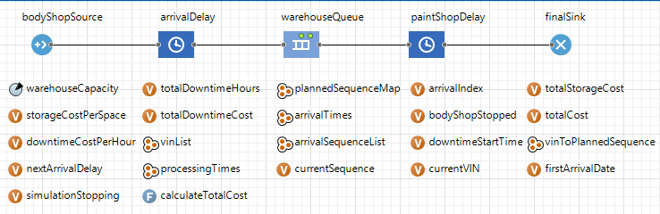
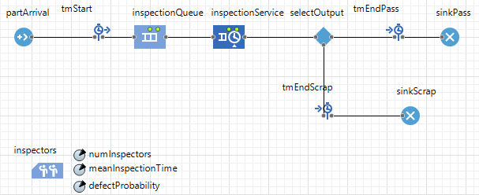
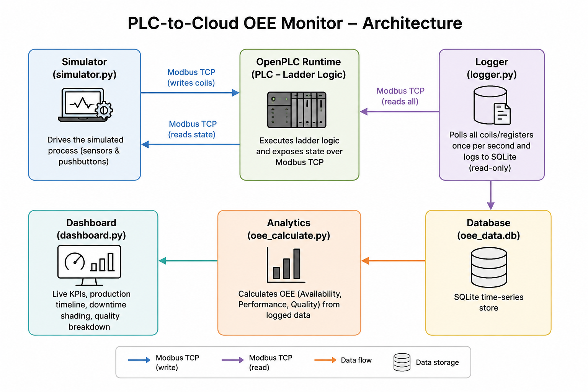
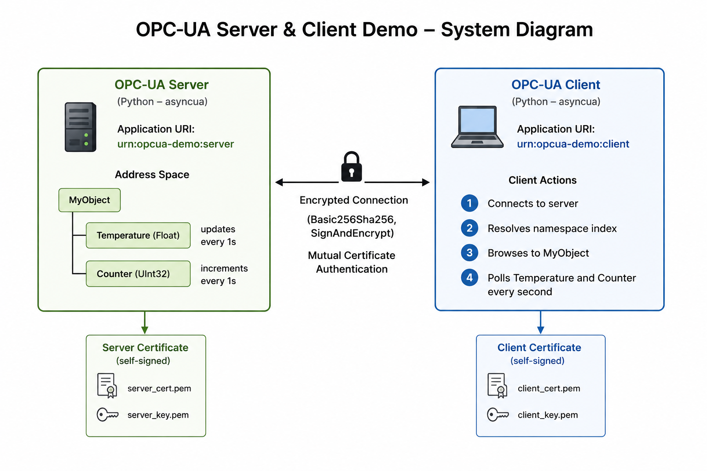
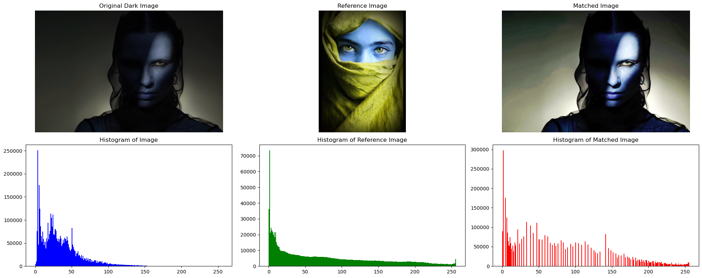
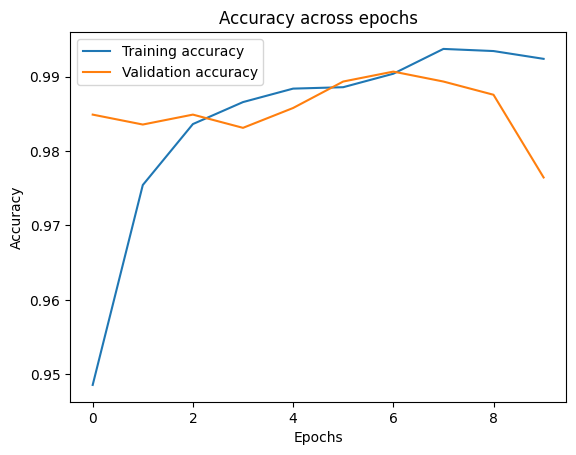
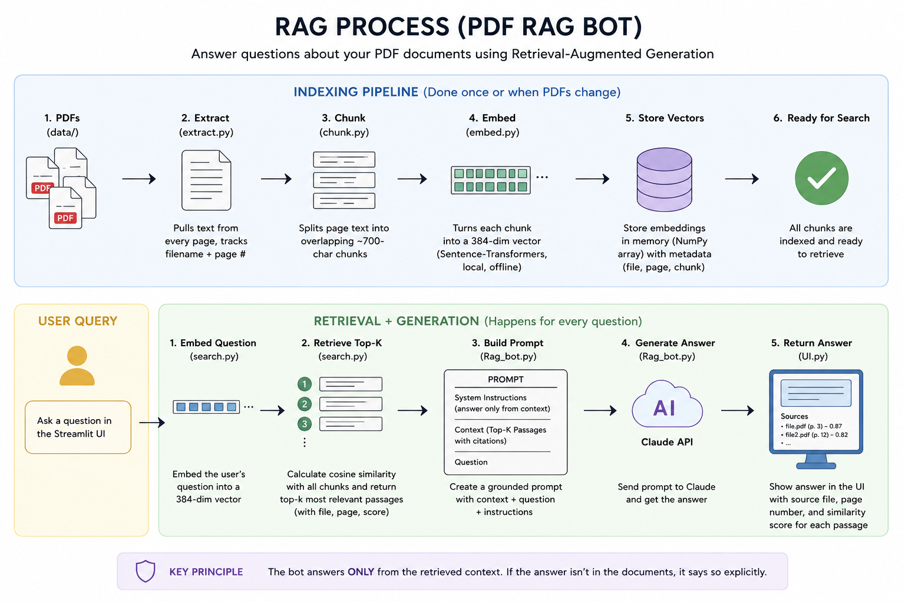
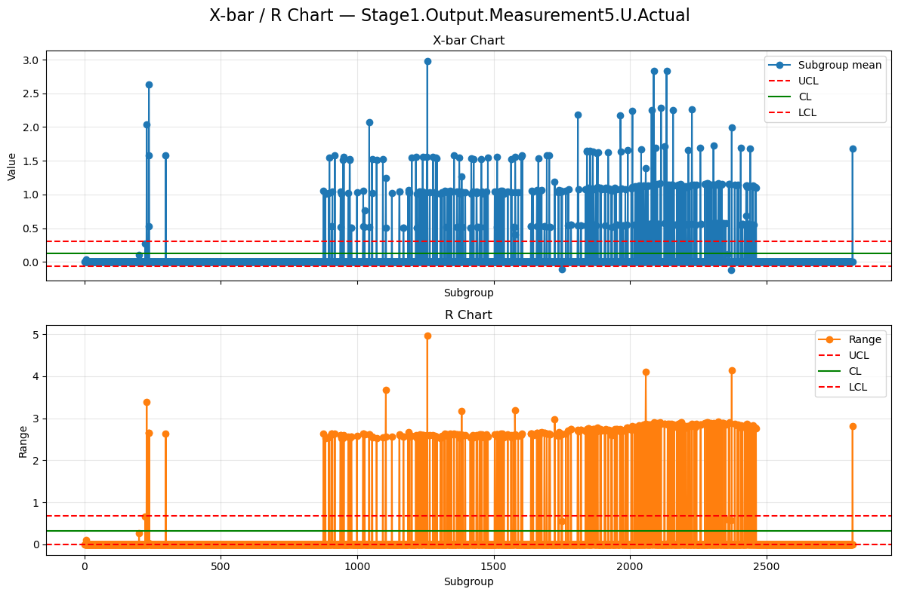

Wisdom Favour
Chizoba
M.Eng. Ingenieur für Fertigungssysteme & Digitale Transformation
Ingenieur für Fertigungssysteme und digitale Transformation mit Expertise in digitaler Fertigung, Optimierung von Produktionssystemen, Qualitätsengineering und industrieller Datenanalyse.
Ich entwickle datengetriebene Fertigungssysteme, die Automatisierung auf der Produktionsebene, Industriedaten, Simulation, KI und Qualitätsengineering miteinander verbinden, um die Produktionsleistung und Entscheidungsfindung zu verbessern.
Sehen Sie sich meinen vollständigen Lebenslauf an, um mehr über meine Berufserfahrung und Ausbildung zu erfahren, oder besuchen Sie mein Projektportfolio, um einen Einblick in meine bisherigen Projekte zu erhalten.
Berufserfahrung
Systementwicklung Fertigung (Werkstudent)
Schiederwerk GmbH, Nürnberg
Oct 2026 – Present
- Entwicklung und Automatisierung von Produktions- und Qualitätsreportings mittels Grafana, MariaDB, SQL, n8n und Scriptcase
- Integration und Auswertung von Produktionsdaten aus ERP/MES zur Schaffung durchgängiger Transparenz entlang des Fertigungsprozesses.
- Entwicklung komplexer SQL-Abfragen, Datenbank-Views und Auswertungen zur Produktions-, Qualitäts- und Prozessanalyse.
- Enge Zusammenarbeit mit Produktion, Qualitätssicherung, Prozessengineering und IT bei der Digitalisierung und kontinuierlichen Verbesserung von Fertigungsprozessen.
- Entwicklung und Weiterentwicklung von Manufacturing-Execution- und Produktionsinformationssystemen zur Unterstützung von Fertigung, Qualitätssicherung und Rückverfolgbarkeit.
Kunden Qualitätsmanagement (Werkstudent)
ams OSRAM, Regensburg
Oct 2025 – Sept 2026
- Eigenständige Erstellung von Kundenqualifizierungs- und Requalifizierungsberichten gemäß den Anforderungen der IATF 16949 / AEC-Q102 unter Verwendung der internen Reporting- und Testdatenauswertungssoftware des Unternehmens
- Erstellung und Pflege von Benutzerdokumentationen in Confluence zur Unterstützung der Einführung und effektiven Nutzung interner Reporting-Tools
- Aktualisierung und Verwaltung von PPAP-Dokumentationen (Production Part Approval Process), einschließlich Certificates of Design and Construction (CDC), unter Verwendung von Microsoft Office, SharePoint und internen Datenbanken
- Koordination der Zusammenstellung, Prüfung und Anpassung von Flussdiagrammen und Control Plans an kundenspezifische Formate unter Einhaltung der Vertraulichkeitsanforderungen
- Entwicklung und Verbesserung von Microsoft Word VBA-Makros zur Automatisierung der Identifizierung und Schwärzung vertraulicher Informationen, was die Effizienz und Genauigkeit der Dokumentation erhöht
Qualität- systemsmanagement (Bachelorsarbeit)
Mubea Aerostructures GmbH, München
Apr 2025 – Oct 2025
- Verantwortete die durchgängige Konzeption und Implementierung einer Microsoft-Power-Apps-Lösung, die die Root Cause Analysis (8D, 5 Why, Ishikawa) von einem manuellen Prozess in einen standardisierten digitalen Workflow überführte.
- Schuf eine strukturierte Grundlage für Qualitätsdaten, indem unstrukturierte RCA-Dokumentationen in nachvollziehbare und analysierbare Datensätze überführt wurden, wodurch die Prozesstransparenz und das datengetriebene Qualitätsmanagement verbessert wurden.
- Verbesserte die Audit-Bereitschaft und unterstützte die Einhaltung von EN9100 und EASA Part-145/Part-21 durch automatisierte Dokumentation, standardisierte Workflows und eine verbesserte Rückverfolgbarkeit.
- Optimierte Qualitätsprozesse, reduzierte Ineffizienzen in der Dokumentation und verbesserte die Konsistenz der RCA in der Luft- und Raumfahrtfertigung.
Qualitätsmanagement (Werkstudent)
Mubea Aerostructures GmbH, München
Apr 2024 – Oct 2025
- Unterstützte die Prozessplanung und Qualitätssicherung durch datengetriebene Analysen zur Sicherstellung von Produktionsleistung und Prozessstabilität.
- Analysierte Fertigungs- und Qualitäts-KPIs zur Unterstützung der kontinuierlichen Verbesserung und von Grundursachenanalysen.
- Führte Gemba-Walks in Produktionsbereichen durch, um die Einhaltung von Qualitätsstandards (5S, Standard Work) zu überprüfen.
- Wirkte an der Digitalisierung der Qualitätsdokumentation mit und verbesserte dadurch die Datenverfügbarkeit und die funktionsübergreifende Zusammenarbeit.
- Unterstützte die Bearbeitung von First Article Inspections (FAIs), Kundenreklamationen und NCRs einschließlich Datenerfassung und Reporting.
- Unterstützte CAPA-Prozesse durch datenbasierte Rückmeldungen.
Datenmangement (Praktikant)
ZF Friedrichshafen AG, Friedrichshafen
Oct 2023 – Apr 2024
- Entwickelte Management-Dashboards mit Power BI, die Transparenz über ZF Supplier Innovations schufen, deren Fortschritt von der Einreichung bis zur Umsetzung verfolgten und die daraus resultierenden finanziellen Vorteile und Kosteneinsparungen in € ermittelten.
- Entwickelte Datenpipelines durch Bereinigung und Transformation von Lieferanten- und Prozessdaten mit Python, Excel, VBA und SQL sowie durch die Anbindung von Datenbank-APIs an Power BI zur Automatisierung von Datenintegration, Reporting und Dashboarding.
- Liefert monatliche und bedarfsgerechte analytische Erkenntnisse zur Unterstützung von Managemententscheidungen.
- Reduzierte den manuellen Reporting-Aufwand durch die Automatisierung von Datenpipelines und KPI-Aktualisierungen.
- Führte Benchmarking-Studien durch, um Lieferanteninnovationen mit Industriestandards zu vergleichen.
Fachliche Kompetenzen
Entwicklung und Digitalisierung von Fertigungs- und Produktionssystemen, industrielle Datenanalyse, Fertigungsanalytik, Prozessautomatisierung, digitale Zwillinge, maschinelles Sehen sowie die Entwicklung datengetriebener Lösungen zur Optimierung von Produktion, Qualität und Rückverfolgbarkeit.
Fertigungsanalytik & Business Intelligence
Automatisierung & Integration
Digitale Zwillinge & Simulation
Machine Vision & Angewandte KI
Qualitätssysteme & Standards
Ausbildung
- M.Eng. Angewandte KI für Digital Production Management | Technische Hochschule Deggendorf 2027
- B.Eng. Wirtschaftsingenieurwesen | Technische Hochschule Deggendorf 2025
Sprachen
- Deutsch: B2 (telc-zertifiziert)
- Englisch: C2 (Muttersprache)
Engineering-Projekte & Anwendungen
Systems-Engineering-Anwendungen in den Bereichen Digitale Zwillinge & Simulation, industrielle Automatisierung, Computer Vision und industrielle ML & Analytik. Jedes Projekt hebt Architekturdesign, Schnittstellenintegration, Code-Implementierungen und messbare industrielle Auswirkungen hervor.
Diskretes Ereignis-Digitaler Zwilling für Qualitätskontrolle & Engpassanalyse
Modelliert eine automatisierte Qualitätskontrolllinie mit mehreren Stationen unter dynamischen Produktionsbedingungen, simuliert stochastische Ausfälle und Nacharbeitslogik.
Systemkontext: Das System simuliert realitätsnahe Fertigungsstörungen, einschließlich stochastischer Maschinenausfälle (MTBF/MTTR), zufälliger Prozessausführungszeiten, Messrauschen und einer geschlossenen Nacharbeit-/Ausschuss-Routing-Logik für defekte Komponenten.
Engineering-Lösung:
- Entwickelte eine objektorientierte Python-Diskrete-Ereignis-Simulation mit
simpy, um den Echtzeit-Teilefluss über Mehrstationen-Produktionsbedingungen während einer 8-stündigen Betriebsschicht abzubilden. - Programmierte kontinuierliche Ausfallprozesse unter Verwendung exponentieller Verteilungen (MTBF/MTTR) zusammen mit Gaußscher Variation für Zykluszeiten.
- Implementierte eine automatisierte Inspektionsklassifizierungs-Engine (LSL = 9,9, USL = 10,1), um Teile dynamisch in FPY, Nacharbeit oder Ausschuss zu leiten.
- Automatisierte Berechnungen für Stationsauslastung, Warteschlangentiefe, Durchsatz, OEE und Engpasserkennung.
V&V & Auswirkung: Überprüfte die Modellstabilität durch Integrieren einer 30-minütigen Aufwärmphase, um vorübergehende Startverzerrungen zu eliminieren. Die Simulation quantifizierte die Auswirkung der Maschinenverfügbarkeit und der Nacharbeitsgrenzen auf den Gesamtdurchsatz und die OEE.
Stochastische Maschinenausfall-Logik
# Continuous Exponential MTBF/MTTR Process
def breakdown_process(env, station_name):
mtbf = STATIONS[station_name]["mtbf"]
mttr = STATIONS[station_name]["mttr"]
if mtbf >= 9999: return
while True:
time_to_failure = random.expovariate(1.0 / mtbf)
yield env.timeout(time_to_failure)
DOWN[station_name] = True
yield env.timeout(mttr)
DOWN[station_name] = False Warteschlangendynamik & Engpassdiagramm
Warteschlangendynamik & Engpassdiagramm
Erweiterte LTspice-Simulation & Analyse des dynamischen Verhaltens
Bewertung des dynamischen Verhaltens und der Regelungsstabilität eines Instrumentenverstärker-Frontends, das in einen aktiven Sallen-Key-Tiefpassfilter kaskadiert ist.

Systemkontext: Durch Variieren des Rückkopplungsverstärkungsparameters (K) werden das Einschwingverhalten, die Eigenfrequenz und die Dämpfungseigenschaften des Systems systematisch sowohl bei Zeitbereichs-Sprungeingaben als auch bei Frequenzbereichs-AC-Sweeps charakterisiert.
Engineering-Lösung:
- Baute einen physischen Teststand mit Oszilloskop und Signalgenerator sowie ein hochpräzises LTspice-Simulationsmodell auf.
- Analysierte Sprungantworten, um dynamische Metriken zu extrahieren, darunter das Dämpfungsverhältnis (ζ = 0,204) und die Eigenfrequenz (ω_n = 3683 rad/s).
- Kartierte die Systemfrequenzantwort über Bode-Diagramme (1 Hz – 500 kHz), um die Grenzen des Tiefpassfilters zu definieren.
V&V & Auswirkung: Validierte das virtuelle Simulationsmodell anhand physischer Hardware und bewies, dass die Anpassung der internen Schleifenverstärkung das Überschwingen eliminiert (M_p = 51,94 % ↓ 0 %).
SPICE-Netzliste & Simulationsbeschränkungen
Sensor Pulse Source & Simulation Setup
V1 -288 448 R0 PULSE(0 50m 0 1n 1n 5m 10m) Rser=50
V2 400 464 R0 14
V3 528 464 R0 -14
* Active Component Network Configuration
SYMATTR InstName R2 / Value 150K
SYMATTR InstName R6 / Value 2.2K
SYMATTR InstName C1 / Value 22n
.tran 10m Warteschlangendynamik & Engpassdiagramm
Warteschlangendynamik & Engpassdiagramm
AnyLogic-Digitaler Zwilling für intelligente Lagerhaltungssequenzierung
Logistikoptimierung zwischen Hochregallager und Rohbau, bei der die Dimensionierung des Lagerpuffers gegen die finanziellen Auswirkungen von Produktionsstillständen abgewogen wird.

Engineering-Lösung: Entwickelte ein Multi-Methoden-AnyLogic-Modell mit Java-Agenten, die Produktionspläne dynamisch in speichergemappte Sequenzstrukturen extrahieren. Entwickelte eine benutzerdefinierte Logik zur Verfolgung von totalDowntimeHours, totalStorageCost und zum dynamischen Stoppen/Fortsetzen des Materialroutings, sobald ein nachgelagerter Engpass auftritt.
V&V & Auswirkung: Lieferte einen interaktiven operativen digitalen Zwilling, der Re-Sequenzierungsstrategien einem Stresstest unterziehen kann und einen analytischen Rahmen bietet, um Lagerkosten gegen Ausfallrisiken abzuwägen.
Simulationsmodell & Logikarchitektur
Downtime & Storage Cost Tracker
totalDowntimeHours = 13.46 hours;
totalDowntimeCost = €5,383,184;
totalStorageCost = €750,000;
bodyShopStopped = false;
// Sequential Map Ingestion Engine
plannedSequenceMap.clear();
List<Tuple> planned = select(planned_sequence).list(); Warteschlangendynamik & Engpassdiagramm
Warteschlangendynamik & Engpassdiagramm
AnyLogic DES zur Kapazitätsoptimierung industrieller Qualitätstore
Analyse eines manuellen Inspektionstors mit Engpass: ob mehr Prüfer eingestellt werden sollen (Szenario A) oder die Gerätegeschwindigkeit erhöht werden soll (Szenario B).

Engineering-Lösung: Baute einen stochastischen DES in AnyLogic (Source → Queue → Service → SelectOutput → Sink) mit exponentiellen Zwischenankunftszeiten (λ = 0,2/min) und dreieckigen Bedienzeiten auf. Führte automatisierte Parametervariationsexperimente mit unabhängigen Wiederholungen durch, um 95%-Konfidenzintervalle für alle KPIs zu berechnen.
V&V & Auswirkung: Bewies, dass Szenario A die mittlere Zykluszeit um 71 % (16,02 → 4,65 min) reduziert und die Volatilität nahe der Sättigung stark abmindert, was das Geschwindigkeits-Upgrade übertrifft. Validierte die Baseline-Leistung anhand theoretischer M/G/1-Warteschlangenmodelle.
Simulationsmodell & Logikarchitektur
// Dynamic Quality Inspection Routing Logic
if ( randomTrue(defectProbability) ) {
trgScrapEvent.add(time() - agent.entryTime);
} else {
trgPassEvent.add(time() - agent.entryTime);
}
// Parameter Variation Multi-Run Callback
statUtilization.add( root.inspectorPool.utilization() );
statCycleTime.add( root.systemTimeMeasure.mean() ); Warteschlangendynamik & Engpassdiagramm
Warteschlangendynamik & Engpassdiagramm
Industrieller SPS-zu-Cloud-OEE-Monitor
End-to-End IT/OT-Integrationsstack, der Echtzeit-Industrie-SPS-Logik und cloudbasierte Analytik über Modbus TCP verbindet.
Systemkontext: Modelliert eine simulierte Produktionslinie, die durch IEC 61131-3-Kontaktplanlogik gesteuert wird, die in einer containerisierten OpenPLC-Runtime ausgeführt, über Modbus TCP in eine entkoppelte Python-Datenpipeline gestreamt und als Live-OEE-Dashboard visualisiert wird.
Engineering-Lösung:
- Programmierte vollständige Kontaktplanlogik im OpenPLC Editor v4, einschließlich Start/Stopp-Selbsthalteschaltungen und verriegelter Zähler.
- Erstellte ein Python-Simulationsskript zur Ansteuerung virtueller Sensoren über beschreibbare Modbus-TCP-Coils.
- Entwickelte einen schreibgeschützten Polling-Dienst, um zeitgestempelte Betriebsdaten direkt in SQLite zu protokollieren.
- Entwickelte Off-PLC-Python-Berechnungsmodule zur Berechnung von Verfügbarkeits-, Leistungs- und Qualitäts-KPIs, die in Plotly Dash gerendert werden.
OEE-Berechnungskern
final = readings[-1]
cycle_count = final["cycle_count"]
good_count = final["good_count"]
availability = (run_time / total_elapsed) if total_elapsed > 0 else 0.0
ideal_cycles_possible = (run_time / ideal_cycle_time_seconds) if run_time > 0 else 0.0
performance = (cycle_count / ideal_cycles_possible) if ideal_cycles_possible > 0 else 0.0
quality = (good_count / cycle_count) if cycle_count > 0 else 0.0
oee = availability * performance * quality
SPS-zu-OEE-ArchitekturGesicherter OPC-UA-Server & -Client
Implementierung eines voll funktionsfähigen OPC-UA-Servers und eines unabhängigen Clients von Grund auf in Python, aufgebaut über das vollständige Sicherheitsmodell des Protokolls.
Engineering-Lösung: Baute einen auf asyncua basierenden OPC-UA-Server auf, der einen strukturierten Adressraum bereitstellt, der über eine asynchrone Ereignisschleife in Echtzeit aktualisiert wird. Implementierte gegenseitige X.509-Zertifikatsauthentifizierung unter Verwendung von OpenSSL-generierten Zertifikaten mit Subject Alternative Name (SAN)-Einträgen, die genau mit der Anwendungs-URI jedes Endpunkts übereinstimmen. Konfigurierte die Sicherheitsrichtlinie Basic256Sha256 im Modus SignAndEncrypt.
V&V & Auswirkung: Überprüfte die Zertifikatskonfiguration durch Inspizieren jedes SAN-Eintrags mit OpenSSL, bevor er in die Anwendung eingebunden wurde, und validierte den Sicherheits-Handshake durch absichtliches Testen von Verbindungsfehlern, bevor eine saubere authentifizierte Sitzung erreicht wurde.
Gesicherte Server-Konfiguration
server.set_endpoint("opc.tcp://0.0.0.0:4840/freeopcua/server/")
await server.set_application_uri("urn:opcua-demo:server")
server.set_security_policy([
ua.SecurityPolicyType.Basic256Sha256_SignAndEncrypt
])
await server.load_certificate("server_cert.pem")
await server.load_private_key("server_key.pem")
idx = await server.register_namespace("http://opcua-demo.wisdom")
myobj = await server.nodes.objects.add_object(idx, "MyObject")
temperature = await myobj.add_variable(idx, "Temperature", 21.5)
counter = await myobj.add_variable(idx, "Counter", 0)
Server-Client-Secure-Channel-ArchitekturBag of Visual Words Szenenklassifizierung
Szenenklassifizierung über 8 Kategorien für automatisierte visuelle Erkennungspipelines ohne Deep Learning.

Engineering-Lösung: Baute eine Bag of Visual Words-Pipeline auf, die dichte SIFT-Deskriptoren (Grid step=8, Keypoint size=16), ein 512-Wörter-MiniBatchKMeans-Codebook, horizontale Spatial-Pyramid-Codierung, PCA (64 Komponenten) und einen RBF-Kernel-SVM-Klassifikator verwendet.
V&V & Auswirkung: 8-fache stratifizierte Kreuzvalidierung an 1.882 Trainingsbildern und Evaluierung an 806 zurückgehaltenen Testbildern. Repliziert die beste BoVW-Konfiguration aus arXiv:2105.04895.
Dense SIFT-Pipeline
def dense_keypoints(size=IMG_SIZE, step=STEP, kp_size=KP_SIZE):
half = kp_size // 2
return [
cv2.KeyPoint(float(x), float(y), kp_size)
for y in range(half, size - half + 1, step)
for x in range(half, size - half + 1, step)
]
def extract_dense_sift(path):
img = cv2.imread(path, cv2.IMREAD_GRAYSCALE)
img = cv2.resize(img, (IMG_SIZE, IMG_SIZE))
sift = cv2.SIFT_create()
kps = dense_keypoints()
kps, desc = sift.compute(img, kps)
ys = np.array([kp.pt[1] for kp in kps], dtype=np.float32)
return desc.astype(np.float32), ys Konfusionsmatrix & Klassifikationsbericht
Konfusionsmatrix & Klassifikationsbericht
Histogramm-Matching: Arithmetischer Ansatz
Entwickelt für luftgetrennte Embedded-Vision-Geräte, auf denen Bibliotheken von Drittanbietern wie skimage nicht installiert werden können.
Engineering-Lösung: Erstellte eine Histogrammspezifikation aus rohem NumPy unter Verwendung von np.bincount, kumulativer Verteilungsanpassung und Lookup-Tabellen-Indizierung.
V&V & Auswirkung: Erzielte Tonwertanpassung auf Bibliotheksniveau mit O(1)-Pixertransformationsgeschwindigkeit und null externen Framework-Abhängigkeiten.
Manuelle CDF-Lookup-Erstellung
hist_a = np.bincount(image.ravel(), minlength=256)
cdf_a = np.cumsum(hist_a / hist_a.sum())
hist_b = np.bincount(reference.ravel(), minlength=256)
cdf_b = np.cumsum(hist_b / hist_b.sum())
mapping = np.zeros(256, dtype=np.uint8)
for i in range(256):
diff = np.abs(cdf_a[i] - cdf_b)
mapping[i] = np.argmin(diff)
matched_image = mapping[image]
CDF-Matching & Remapping-VisualisierungTeileklassifikator: Transfer Learning über EfficientNetV2
Automatisierte Teileerkennung für High-Mix-Produktionszellen zur Gewährleistung eines korrekten Work-Cell-Routings.
Engineering-Lösung: Entwickelte eine TensorFlow/Keras-Pipeline unter Verwendung von EfficientNetV2B0, partiellem Layer-Unfreezing, Datenaugmentierung und Early Stopping.
V&V & Auswirkung: Lieferte eine zuverlässige Teileklassifizierung mit hoher Genauigkeit, verpackt in einem .keras-Deployment-Format.
Feinabgestimmte EfficientNet-Architektur
base_model = EfficientNetV2B0(
input_shape=(224, 224, 3), include_top=False,
weights="imagenet", pooling="avg"
)
for layer in base_model.layers[:-20]:
layer.trainable = False
model = models.Sequential([
data_augmentation,
base_model,
layers.Dense(256, activation="relu"),
layers.Dropout(0.3),
layers.Dense(3, activation="softmax")
])
Konfusionsmatrix & TrainingsverlustFahrzeugbildklassifikator: Zweistufiges Fine-Tuning mit ResNet50
Automatisiertes Fahrzeugklassen-Tagging für logistische Inspektionspunkte und Qualitätsverfolgung.
Engineering-Lösung: Implementierte eine zweistufige Trainingsstrategie mit ResNet50: initiales Head-Training bei 1e-3, gefolgt von partiellem Backbone-Unfreezing bei 1e-4 mit Lernratenreduktion.
V&V & Auswirkung: Erzielte hohe Präzision über Fahrzeugkategorien hinweg und minimierte gleichzeitig Overfitting bei kleinen Datensätzen.
Zweistufige Fine-Tuning-Strategie
# Stage 1: Frozen backbone
base_model.trainable = False
model.compile(optimizer=Adam(1e-3), loss="sparse_categorical_crossentropy")
model.fit(train_ds, epochs=5)
# Stage 2: Fine-tune last 30 layers
base_model.trainable = True
for layer in base_model.layers[:-30]:
layer.trainable = False
model.compile(optimizer=Adam(1e-4), loss="sparse_categorical_crossentropy")
model.fit(train_ds, epochs=30, callbacks=[ReduceLROnPlateau(factor=0.5)]) Validierungs-Heatmap & Lernratenkurven
Validierungs-Heatmap & Lernratenkurven
Retrieval-Augmented-Generation-Engine
Eine RAG-Pipeline in nativem Python, ohne Frameworks erstellt, um die direkte Kontrolle über PDF-Ingestion, Chunking, Embedding und fundierte LLM-Generierung zu demonstrieren.
Engineering-Lösung: Entwickelte einen PDF-Textextraktor auf Seitenebene, der die Rückverfolgbarkeit der Quelle bewahrt. Generierte 384-dimensionale Embeddings lokal über sentence-transformers und normalisierte die Vektoren, sodass die Kosinus-Ähnlichkeit auf ein einzelnes Skalarprodukt reduziert wird. Schrieb eine NumPy-basierte Ähnlichkeitssuche, die Tausende von Chunks ohne externe Vektordatenbank rangiert.
V&V & Auswirkung: Validierte die Retrieval-Qualität durch Inspizieren des Similarity-Score-Abfalls über die rangierten Ergebnisse und bestätigte, dass das Ranking ein echtes Signal trägt und keine nahezu gleichmäßigen Scores aufweist. Bereitgestellt mit einem Streamlit-Frontend für interaktive Abfragen.
Retrieval-Block
def search_chunks(query, chunks, top_k=5):
query_embedding = model.encode([query], normalize_embeddings=True)[0]
similarities = [
np.dot(query_embedding, chunk['embedding'])
for chunk in chunks
]
top_indices = np.argsort(similarities)[-top_k:][::-1]
results = []
for i in top_indices:
result = chunks[i].copy()
result['score'] = float(similarities[i])
results.append(result)
return results
RAG-Workflow basierend auf READMEChronologische Prognose & Zeitreihenregression
Bedarfs- und Lastprognosemodell zur Unterstützung der Wartungs- und Betriebsplanung.
Engineering-Lösung: Erzwang eine rollierende TimeSeriesSplit-Kreuzvalidierung, um die chronologische Reihenfolge beizubehalten und zeitliches Data Leakage zu eliminieren.
V&V & Auswirkung: Generierte konsistente 24-Stunden-Bedarfsprognosen, die saisonale Spitzen und Betriebszyklen effektiv abbildeten.
Temporale Kreuzvalidierungsschleife
tscv = TimeSeriesSplit(n_splits=10)
for train_index, test_index in tscv.split(X):
X_tr, X_val = X.iloc[train_index], X.iloc[test_index]
y_tr, y_val = y.iloc[train_index], y.iloc[test_index]
pipeline.fit(X_tr, y_tr)
preds = pipeline.predict(X_val)
scores.append(mean_squared_error(y_val, preds, squared=False)) Rollierende Prognose vs. beobachtete Nachfrage
Rollierende Prognose vs. beobachtete Nachfrage
Automatisierte Statistische Prozesslenkung (SPC) & Qualitätsfähigkeits-Engine
Echtzeit-Anomalie- und Drift-Erkennung über Tausende kontinuierliche Fabriksensorströme, die manuelles Plotten durch systemische statistische Überwachung ersetzt.
Engineering-Lösung: Entwickelte eine reine NumPy/Pandas-Engine zur Berechnung dynamischer Untergruppenmittelwerte (X̄) und Spannweiten (R) unter Verwendung von Standard-Regelkartenkonstanten (A₂, D₃, D₄). Programmierte alle 8 Nelson-Run-Rules, implementierte Page-Hinkley- und CUSUM-Drift-Detektoren und berechnete kurz-/langfristige Prozessfähigkeitsindizes (Cp, Cpk, Pp, Ppk).
V&V & Auswirkung: Ein Diagnose-Framework, das über Tausende von Streaming-Knoten läuft, automatisch ein Master-Qualitätsdashboard generiert und Regelverstöße meldet, bevor Defekte auftreten, was prädiktive Qualität im Maßstab ermöglicht.
Fähigkeits- & Grenzwertformulierungen
# Process Variance Subgroup Logic
def subgroup_stats(subgroups: np.ndarray):
xbar = subgroups.mean(axis=1)
R = subgroups.max(axis=1) - subgroups.min(axis=1)
return xbar, R, float(xbar.mean()), float(R.mean())
# Multi-Tier Drift Inversion Tracking
Cpos = max(0.0, Cpos + zi - k)
Cneg = min(0.0, Cneg + zi + k)
if Cpos > h: ap.append(i); Cpos = 0.0
Agentische NLP-zu-SQL-Pipeline für die Fertigungsdatenbank
Eine mehrstufige KI-Pipeline, die natürlichsprachliche Fragen in ausführbare SQL-Abfragen über eine 3,2 GB große Produktionsdatenbank übersetzt.
Engineering-Lösung:
- Dockerisierte Infrastruktur: Einrichtung einer isolierten, containerisierten Umgebung (MariaDB, Python-App, Streamlit-UI).
- Baseline vs. agentischer Workflow: Entwicklung eines Agenten (Selbstkorrektur-Schleife), der die Datenbank als Werkzeug nutzt, um Syntaxfehler zu erkennen, sie an das LLM zurückzuführen und sie autonom zu korrigieren.
- Schema-bewusstes Prompting: Dynamische Extraktion des Datenbankschemas über SQLAlchemy.
- Automatisierte Evaluierung: Führt Abfragen gegen "Gold SQL" aus, um die Ausführungsgenauigkeit zu messen.
V&V & Auswirkung: Der Agent verhinderte harte Pipeline-Abstürze durch Syntaxfehler und verbesserte die Robustheit im Vergleich zur Baseline. Die Evaluierung ergab eine Ausführungsgenauigkeit von 73,68 % für beide Systeme, was verdeutlicht, dass semantische Genauigkeit eine größere Hürde darstellt als reine Syntax.
Korrekturlogik
# Agentic Self-Correction Loop
success, error_msg = execute_sql(engine, sql_query)
if not success:
print(f"First attempt failed: {error_msg}")
correction_prompt = f"""
The SQL query you wrote failed with this database error:
{error_msg}
Here was your query:
{sql_query}
Please fix the query and output ONLY the corrected SQL.
"""
sql_query = generate_sql(llm, schema_text, correction_prompt)
success, error_msg = execute_sql(engine, sql_query)
if success:
print("Agent successfully corrected the SQL!")
Fortschrittliche industrielle Fehlerreduktions-Pipeline
Diagnose struktureller Maschinenfehlertypen aus hochfrequenten Spektralsignalen, die von starkem Klassenungleichgewicht geplagt sind.
Engineering-Lösung: Stabilisierte Merkmale mit StandardScaler und wendete SMOTE an, um Minderheitsfehlerklassen auszugleichen. Isolierte FFT-Spalten für gezielte PCA, wodurch Spektralrauschen in 10 dichte orthogonale Varianzkomponenten reduziert wurde, und stapelte diese dann horizontal (np.hstack) mit Nicht-FFT-Merkmalen. Führte eine 5-fache RandomizedSearchCV über LGBMClassifier-Hyperparameter durch.
V&V & Auswirkung: Stellte eine Sub-Millisekunden-Anomalie-Mapping-Pipeline für Predictive-Maintenance-Werkstätten bereit, die detaillierte Konfusionsmatrizen und Mehrklassenberichte liefert, die für die Produktionsintegration geeignet sind.
Spektrale PCA & Ensemble-Ausführung
# Isolated Spectral Decomposition
pca = PCA(n_components=10)
X_train_fft = pca.fit_transform(
X_train_bal[:, [X.columns.get_loc(c) for c in fft_cols]]
)
# Feature Merging & Tuned Search Routing
X_train_final = np.hstack([X_train_nonfft, X_train_fft])
search = RandomizedSearchCV(
model, param_dist, n_iter=20, scoring='f1_macro', cv=5
)
search.fit(X_train_final, y_train_bal)